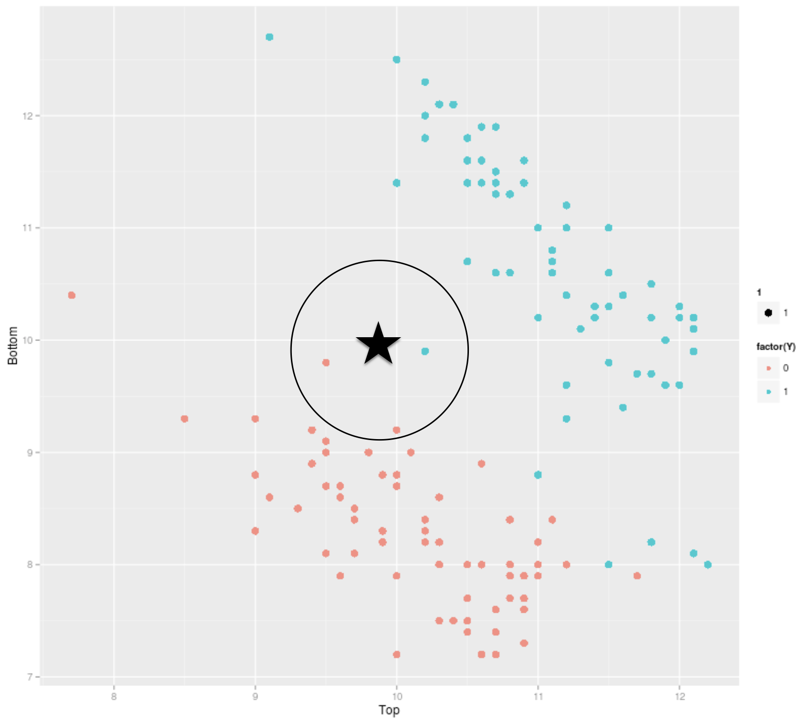

Before we start, let’s import the data science libraries into Python.
# Importing necessary librariesimport pandas as pdimport matplotlib.pyplot as pltimport seaborn as snsfrom sklearn.model_selection import train_test_splitfrom sklearn.tree import DecisionTreeClassifier, plot_treefrom sklearn.neighbors import KNeighborsClassifierfrom sklearn.preprocessing import StandardScalerfrom sklearn.metrics import confusion_matrix, ConfusionMatrixDisplay from sklearn.metrics import accuracy_score, recall_score, precision_score
Here, we use specific functions from the pandas, matplotlib, seaborn and sklearn libraries in Python.
K nearest neighbors
This is a supervised learning algorithm that uses proximity to make classifications or predictions about the clustering of a single data point.
Basic idea: Predict a new observation using the K closest observations in the training dataset.
To predict the response for a new observation, K-NN uses the K nearest neighbors (observations) in terms of the predictors!
The predicted response for the new observation is the most common response among the K nearest neighbors.
The algorithm has 3 steps:
Choose the number of nearest neighbors (K).
For a new observation, find the K closest observations in the training data (ignoring the response).
For the new observation, the algorithm predicts the value of the most common response among the K nearest observations.
Suppose we have two groups: the red group and the green group. The number line shows the value of a variable for our training data.
A new observation arrives, and we don’t know which group it belongs to.
If we had chosen \(K=3\), then the three nearest neighbors would vote on which group the new observation belongs to.
Using \(K = 3\), that’s 2 votes for “genuine” and 2 for “fake.” So we classify it as “genius.”

Closeness is based on Euclidean distance.
Implementation Details
Ties
If there are more than K nearest neighbors, include them all.
If there is a tie in the vote, set a rule to break the tie. For example, randomly select the class.
KNN uses the Euclidean distance between points. So it ignores units.
Example: two predictors: height in cm and arm span in feet. Compare two people: (152.4, 1.52) and (182.88, 1.85).
These people are separated by 30.48 units of distance in the first variable, but only by 0.33 units in the second.
Therefore, the first predictor plays a much more important role in classification and can bias the results to the point where the second variable becomes useless.
As a first step, we must transform the predictors so that they have the same units!
This requires a predictor standardization process, which is done in Python.
Standardization
Standardization refers to centering and scaling each numerical predictor individually. This places all predictors on the same scale.
To center a predictor variable, the mean value of the predictor is subtracted from all values.
Therefore, the centered predictor has a mean of zero (i.e., its average value is zero).
To scale a predictor, each of its values is divided by its standard deviation.
When scaling the data, the values have a common standard deviation of one.
In mathematical terms, we standardize a predictor as:
On the new scale, the two points are now: \((1.82, 2.53)\) and \((-0.91, -1.60)\).
The distance between these points is \(\sqrt{(-0.91 - 1.82)^2 + (-1.60-2.53)^2}\)\(= \sqrt{7.45 + 17.05} = 4.95\).
Discussion
K-NN is intuitive and simple and can produce decent predictions. However, K-NN has some disadvantages:
When the training dataset is very large, K-NN is computationally expensive. This is because, to predict an observation, we need to calculate the distance between that observation and all the others in the dataset. (“Lazy learner”).
In this case, a decision tree is more advantageous because it is easy to build, store, and make predictions with.
The predictive performance of K-NN deteriorates as the number of predictors increases.
This is because the expected distance to the nearest neighbor increases dramatically with the number of predictors, unless the size of the dataset increases exponentially with this number.